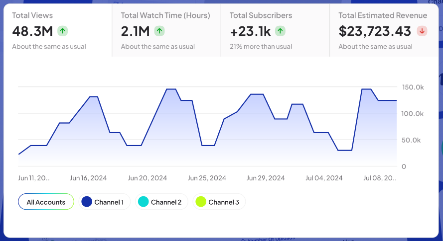

Find Profitable Niches in YouTube Within Seconds with NexLev
In today’s world, YouTube isn’t just a platform to watch funny cat videos or travel vlogs; it’s a business. Content creators, marketers, and businesses are all flocking to YouTube to carve out a piece of the digital pie. But, how do you ensure your content stands out in the crowd of millions? The secret sauce isn’t just making great videos—it's finding the right niche.
If you’ve ever felt like you were just spinning your wheels trying to find a profitable niche on YouTube, then you’ll want to hear about NexLev. NexLev is the game-changing, AI-based niche finder that helps you discover profitable niches on YouTube in mere seconds. No more guesswork or endless hours spent searching for that one winning niche—NexLev does the hard work for you.
In this article, we’re going to break down how NexLev can save you time, stress, and a whole lot of effort while helping you find those goldmine niches that can take your YouTube game to the next level.
Why Niche Matters on YouTube?
Before we dive into NexLev, let’s take a quick look at why finding the right niche is absolutely crucial for YouTube success.
YouTube is an enormous platform, with over 2 billion logged-in monthly users. And while that’s great for exposure, it also means the competition is fierce. In a sea of content creators, how can you make sure your videos are seen by the right audience?
The answer is simple: find a niche.
A niche is essentially a specific segment of the broader market that has its own set of needs, interests, and preferences. By targeting a niche, you can create content that speaks directly to that audience, making your channel more likely to grow and succeed.
But finding the right niche is easier said than done. You want something that has enough demand to attract views, but isn’t so oversaturated that your content gets lost in the shuffle. And let’s not forget about profitability—you want a niche where people are willing to spend money, whether it’s on products, services, or your own offerings.
That’s where NexLev comes in.
What is NexLev?
NexLev is a cutting-edge platform powered by Artificial Intelligence (AI) that’s designed to help you discover profitable niches on YouTube in no time. NexLev.io uses sophisticated algorithms to analyze YouTube trends, audience interests, search volume, competition, and other data points to help you pinpoint the most promising niches.
Unlike traditional methods where you have to dig through endless YouTube videos, keywords, and trends to find a profitable niche, NexLev cuts all that time down to seconds. The tool will present you with high-potential niches that are perfectly suited to your interests, expertise, and goals.
How Does NexLev Work?
Let’s break down how NexLev works to help you discover your perfect YouTube niche.
- Data Analysis and AI-Powered Insights: NexLev uses powerful AI algorithms to analyze millions of data points across YouTube. These include search trends, audience engagement, content popularity, competition levels, and more. By processing all this data, NexLev can identify gaps in the market, emerging trends, and areas with high potential for growth.
- Instant Niche Discovery: The best part about NexLev is how quickly it helps you find niches. You don’t have to spend hours on end researching—you simply input your preferences (such as topic interests, target audience, or desired competition levels), and NexLev does the heavy lifting. Within seconds, you’ll have a list of profitable niches to explore.
- Competitor and Trend Analysis: NexLev doesn’t just give you random suggestions; it helps you find niches with solid potential by factoring in competition levels. It looks at existing channels, their subscriber counts, engagement rates, and content strategy to assess how easy or hard it will be to break into the niche. Additionally, it highlights emerging trends to help you stay ahead of the curve.
- Tailored Recommendations: NexLev is highly customizable. Whether you’re a vlogger, a tech reviewer, a gamer, or a beauty guru, the platform can tailor its suggestions to fit your unique style and interests. You won’t have to waste time sifting through irrelevant niches—you’ll only get suggestions that make sense for you.
- Actionable Data and Insights: Once NexLev presents you with a list of profitable niches, it doesn’t just leave you hanging. The platform offers actionable insights like search volume, keyword ideas, and audience demographics, so you can make an informed decision. It even helps you evaluate monetization opportunities, giving you the full picture of a niche's potential.
Why You Should Use NexLev
You might be wondering, “Why should I bother with NexLev? Can’t I just do the research myself?” Well, here are a few reasons why NexLev is a must-have tool for anyone serious about growing their YouTube channel:
- Saves Time and Effort: The most obvious benefit is that NexLev saves you a ton of time. Traditional niche research involves hours (or even days) spent digging through YouTube trends, Google searches, and social media platforms. With NexLev, all you need is a few seconds, and you’ve got a list of highly profitable niches to explore.
- AI-Powered Accuracy: AI doesn’t just speed up the process; it also ensures accuracy. NexLev’s AI is designed to spot patterns, trends, and opportunities that might go unnoticed by the human eye. Whether it’s an emerging sub-niche or a keyword with low competition, NexLev can help you find the sweet spots others might miss.
- Customizable for Your Needs: Every YouTube creator has their own unique approach, and NexLev understands that. The platform tailors its niche recommendations to suit your goals, audience, and style. Whether you’re looking for a low-competition niche or a highly lucrative one, NexLev can provide suggestions based on your preferences.
- Maximize Your YouTube Earnings: Finding a profitable niche doesn’t just help you grow your audience; it helps you monetize effectively. NexLev not only shows you the niches with the most potential, but it also provides insights on how to turn those niches into revenue streams. Whether it’s through ad revenue, affiliate marketing, or product sales, NexLev gives you the roadmap to financial success on YouTube.
- Stay Ahead of Trends: One of the biggest challenges on YouTube is staying ahead of trends. By the time you’ve identified a hot topic, everyone else has already jumped on the bandwagon. NexLev helps you identify emerging trends before they blow up, giving you the chance to be an early adopter and attract an audience before the market becomes saturated.
- Boost Your Creativity: Sometimes, finding the right niche is the hardest part of the creative process. Once you’ve identified a profitable niche, it can spark new ideas for content, collaboration opportunities, and marketing strategies. NexLev not only finds niches—it ignites your creative fire.
How to Use NexLev: A Quick Guide
Using NexLev is super easy. Here’s a quick guide to get started:
- Sign Up on NexLev.io: Head over to nexlev.io and create an account. The platform is user-friendly, so you’ll be up and running in no time.
- Input Your Preferences: Once you’re logged in, you’ll be asked to provide some details about your interests and goals. This could include your preferred niche categories, audience demographic, or even the level of competition you’re comfortable with.
- Let NexLev Do the Work: After you hit submit, NexLev’s AI algorithms get to work, analyzing YouTube data and identifying the best niches for you. Within seconds, you’ll have a list of niche suggestions with detailed insights.
- Explore and Choose: Browse through the niches, review the provided data, and choose the one that resonates most with your goals. NexLev will even provide keyword ideas and trends to help you dive deeper into the niche.
- Create and Monetize: Now it’s time to create content around your chosen niche! With NexLev’s insights, you can craft a strategy for attracting viewers, building a community, and maximizing your YouTube earnings.
Conclusion: Take Your YouTube Channel to the Next Level with NexLev
Finding a profitable niche is the foundation of any successful YouTube channel. NexLev takes the guesswork out of the equation, offering you instant access to a world of lucrative niche possibilities. Whether you're a new creator or an experienced pro, NexLev’s AI-powered platform can help you find the niche that aligns with your interests and financial goals.
So, say goodbye to endless hours of research and hello to NexLev. Let the AI do the heavy lifting, so you can focus on creating amazing content and growing your YouTube channel. With NexLev, the only limit is your imagination.